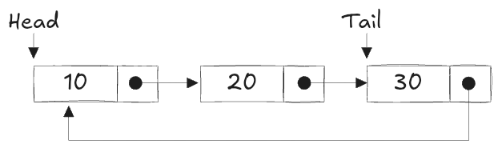

연결 리스트(Linked List)는 데이터를 노드(Node)라는 단위로 저장하고, 각 노드가 다음 노드의 주소(참조)를 저장하는 자료구조이다. 배열과 달리 연결 리스트는 메모리 상에서 연속적이지 않은 위치에 데이터를 저장하며, 필요에 따라 크기를 동적으로 확장하거나 축소할 수 있다.
연결 리스트의 구조
연결 리스트
노드(Node): 데이터와 다음 노드에 대한 참조(포인터)로 구성된다.
데이터(data): 저장되는 실제 값
포인터(next): 다음 노드를 가리키는 참조
헤드(Head): 연결 리스트의 첫 번째 노드를 가리키는 포인터
테일(Tail): 리스트의 마지막 노드로, 다음 노드가 없는 상태 (일반적으로 None으로 표시)
연결 리스트의 종류
단일 연결 리스트 (Singly Linked List)
각 노드가 다음 노드에 대한 참조만을 가지는 가장 기본적인 형태의 연결 리스트이다.
특징
한 방향으로만 순회 가능
마지막 노드의 next는 None을 가리킴
# 단일 연결 리스트 구현class Node:def__init__(self, data):self.data = data # 데이터 저장self.next=None# 다음 노드 초기화class SinglyLinkedList:def__init__(self):self.head =None# 첫 번째 노드(헤드)# insert node _____________________________________________def insert_at_beginning(self, data): new_node = Node(data) new_node.next=self.head # 새 노드가 기존 첫 노드를 가리킴self.head = new_node # 헤드를 새 노드로 변경# delete node _____________________________________________def delete(self, key): current =self.head# 첫 노드가 삭제 대상인 경우if current and current.data == key:self.head = current.nextreturn prev =Nonewhile current and current.data != key: prev = current current = current.nextif current isNone:return# 삭제할 값이 없는 경우 prev.next= current.next# 노드 삭제# search node _____________________________________________def search(self, key): current =self.headwhile current:if current.data == key:returnTrue current = current.nextreturnFalse# append node _____________________________________________def append(self, data): new_node = Node(data)ifnotself.head:self.head = new_node # 리스트가 비어있으면 첫 노드로 설정return current =self.headwhile current.next: current = current.next# 마지막 노드 찾기 current.next= new_node # 새 노드 연결# display node _____________________________________________def display(self): current =self.headwhile current:print(current.data, end=' → ') current = current.nextprint('None')# 사용 예제sll = SinglyLinkedList()sll.append(10)sll.append(20)sll.append(30)sll.display() # 출력: 10 → 20 → 30 → None
10 → 20 → 30 → None
이중 연결 리스트 (Doubly Linked List)
이중 연결 리스트
각 노드가 이전 노드(prev)와 다음 노드(next)에 대한 참조를 모두 가지는 연결 리스트이다.
특징
앞뒤로 순회 가능
삽입/삭제 시 더 유연하게 동작
# 이중 연결 리스트 구현class DNode:def__init__(self, data):self.data = dataself.prev =None# 이전 노드 참조self.next=None# 다음 노드 참조class DoublyLinkedList:def__init__(self):self.head =Nonedef append(self, data): new_node = DNode(data)ifnotself.head:self.head = new_nodereturn current =self.headwhile current.next: current = current.next current.next= new_node new_node.prev = current # 이전 노드 설정def display(self): current =self.headwhile current:print(current.data, end=' ↔ ') current = current.nextprint('None')# 사용 예제dll = DoublyLinkedList()dll.append(10)dll.append(20)dll.append(30)dll.display() # 출력: 10 ↔ 20 ↔ 30 ↔ None
10 ↔ 20 ↔ 30 ↔ None
환형 연결 리스트 (Circular Linked List)

환형 연결 리스트
리스트의 마지막 노드가 처음 노드(헤드)를 가리키는 형태로, 원형 구조를 이룬다.
특징
순환 구조로 인해 리스트의 끝이 없음
특정 상황에서 무한 루프 방지 필요
# 환형 연결 리스트 구현class CNode:def__init__(self, data):self.data = dataself.next=Noneclass CircularLinkedList:def__init__(self):self.head =Nonedef append(self, data): new_node = CNode(data)ifnotself.head:self.head = new_nodeself.head.next=self.head # 자기 자신을 가리킴return current =self.headwhile current.next!=self.head: current = current.next current.next= new_node new_node.next=self.head # 새 노드가 다시 헤드를 가리킴def display(self):ifnotself.head:return current =self.headwhileTrue:print(current.data, end=' → ') current = current.nextif current ==self.head:breakprint('(다시 시작)')# 사용 예제cll = CircularLinkedList()cll.append(10)cll.append(20)cll.append(30)cll.display() # 출력: 10 → 20 → 30 → (다시 시작)
10 → 20 → 30 → (다시 시작)
연결 리스트의 기본 연산
삽입 (Insert)
특정 위치에 새로운 노드를 추가하는 작업이다.
단일 연결 리스트에서 삽입
"""in SinglyLinkedListdef insert_at_beginning(self, data): new_node = Node(data) new_node.next = self.head # 새 노드가 기존 첫 노드를 가리킴 self.head = new_node # 헤드를 새 노드로 변경"""# 사용 예제sll.insert_at_beginning(5)sll.display() # 출력: 5 → 10 → 20 → 30 → None
5 → 10 → 20 → 30 → None
삭제 (Delete)
특정 노드를 삭제하는 작업이다.
예제 (단일 연결 리스트에서 삭제)
"""def delete(self, key): current = self.head # 첫 노드가 삭제 대상인 경우 if current and current.data == key: self.head = current.next return prev = None while current and current.data != key: prev = current current = current.next if current is None: return # 삭제할 값이 없는 경우 prev.next = current.next # 노드 삭제"""# 사용 예제sll.delete(20)sll.display() # 출력: 5 → 10 → 30 → None
5 → 10 → 30 → None
검색 (Search)
리스트에서 특정 값을 찾는 작업이다.
예제 (단일 연결 리스트에서 검색)
"""def search(self, key): current = self.head while current: if current.data == key: return True current = current.next return False"""# 사용 예제print(sll.search(30)) # 출력: Trueprint(sll.search(50)) # 출력: False
True
False
배열과 연결 리스트의 비교
구분
배열 (Array)
연결 리스트 (Linked List)
메모리 구조
연속적인 메모리 공간
비연속적인 메모리 공간
크기
고정 크기
동적 크기 조정 가능
접근 속도
인덱스를 통한 빠른 접근 (O(1))
순차 접근 필요 (O(n))
삽입/삭제
중간 삽입/삭제 시 데이터 이동 필요 (O(n))
포인터 변경만으로 삽입/삭제 가능 (O(1) ~ O(n))
메모리 사용
고정된 크기로 인해 메모리 낭비 가능
필요한 만큼만 메모리 사용
연결 리스트 사용 예제
예제 1: 히스토리 기능 구현 (이중 연결 리스트)
웹 브라우저의 ‘뒤로 가기’ 및 ‘앞으로 가기’ 기능을 이중 연결 리스트로 구현할 수 있다.
예제 코드
# 간단한 웹 브라우저 히스토리 기능dll.append('페이지1')dll.append('페이지2')dll.append('페이지3')current = dll.head.next# '페이지2' 위치# 뒤로 가기if current.prev: current = current.prevprint(f'뒤로 가기: {current.data}') # 출력: 페이지1# 앞으로 가기if current.next: current = current.nextprint(f'앞으로 가기: {current.data}') # 출력: 페이지2
뒤로 가기: 10
앞으로 가기: 20
예제 2: 순환 작업 (환형 연결 리스트)
게임에서 플레이어의 턴을 순환적으로 처리하는 시스템에 활용 가능하다.
예제 코드
# 게임 플레이어 턴 관리cll.append('플레이어1')cll.append('플레이어2')cll.append('플레이어3')current = cll.headfor _ inrange(5): # 5번 턴 진행print(f'{current.data}의 턴입니다.') current = current.next